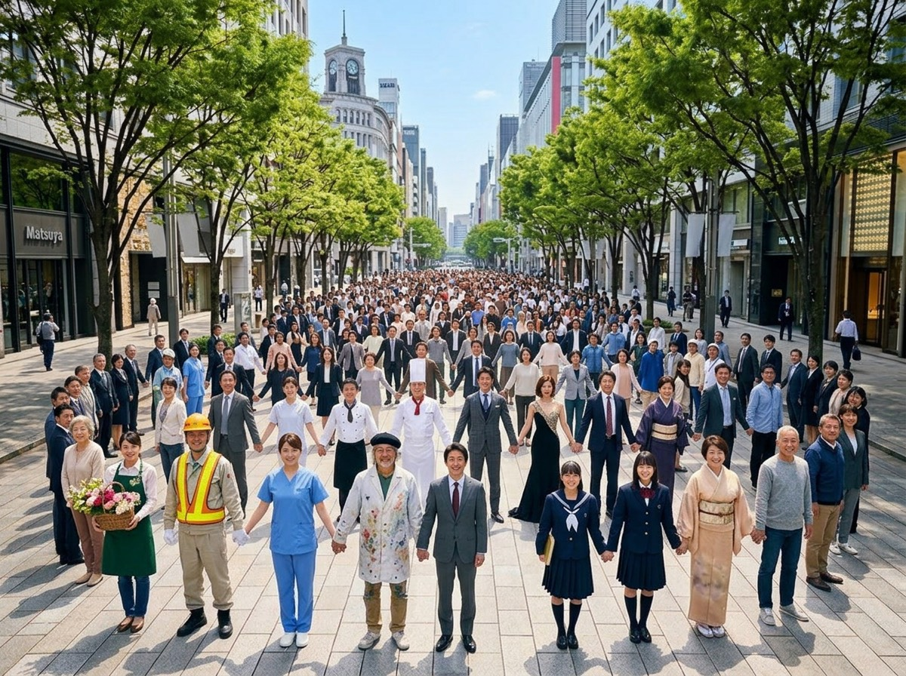

セッション形式の研修で、企業のミッション・ビジョン・フィロソフィーを策定。組織の方向性を明確にし、社員のエンゲージメントを高めるプログラムを提供します。
脳科学とコーチングが融合した、行動変容プログラム。
脳科学・認知心理学・行動経済学の最新知見に基づいて設計。再現性のある変化を起こします。
ティーチングではなくコーチングを中心に。参加者自身の気づきと内発的動機から変化が起きる場を設計。
学習を研修室の中で終わらせない。イベント体験との連携で、感動と学習をリンクさせて記憶に定着。
Mission × Vision × Philosophy
GROWモデルを活用した対話形式で、組織固有のMission・Vision・Philosophyを言語化。全社員が腹落ちする言葉を生み出します。
Team × Engagement × Performance
心理的安全性の構築から始め、チームビルディングゲーム・対話ワークを通じて「一緒に動ける組織」を形成します。
1on1 × Leadership × Transformation
プロフェッショナルコーチによる1on1セッション。GROWモデル・承認技法・内省メソッドで、経営者の思考と行動を深化させます。
Our MVP
自社のMVPを言語化し、日々の事業で体現する——これが、私たちの研修の根拠です。
Mission
地球をハグする
一つひとつの感動体験が、
人と地球をやさしく繋ぐ。
Vision
2,400万人を繋ぐ
イベントと教育の両輪で、
その数字に向かい続ける。

Philosophy
共に
クライアントとともに、
参加者とともに、社会とともに。
企業の課題に合わせて3つのプログラムをご用意しています。
ヒアリングからフォローアップまで、一貫してサポートします。
STEP 01
組織の課題・目標・現状をヒアリング。最適なプログラムをご提案します。
STEP 02
課題に合わせてカスタマイズ。内容・スケジュール・ゴールを設定します。
STEP 03
セッション・ワークショップを実施。参加者の主体的な気づきを引き出します。
STEP 04
研修後の行動変容をサポート。振り返りと継続支援で定着を促進します。
フィロソフィー「共に」の通り、私たちはクライアントの課題をともに考え、ともに解決します。
組織の現状をヒアリングした上で、最適なプログラムをご提案します。初回のご相談は無料です。